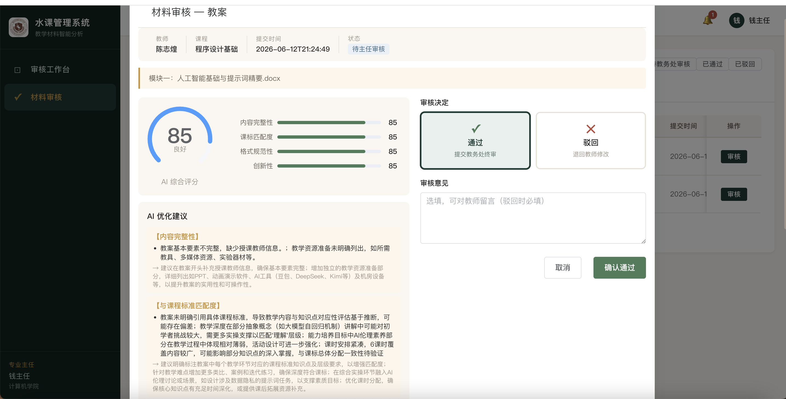
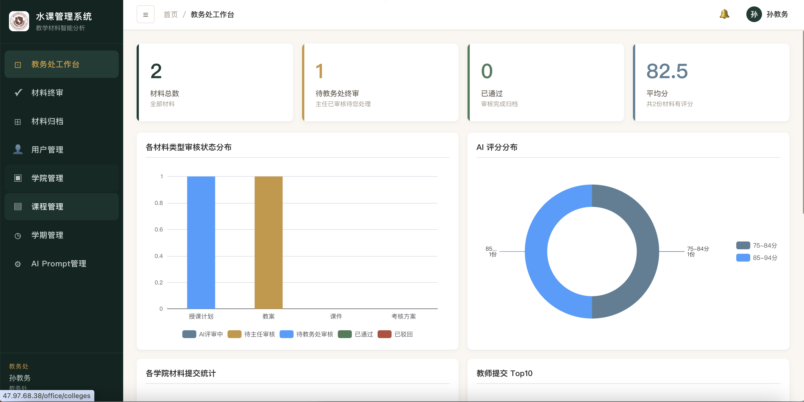
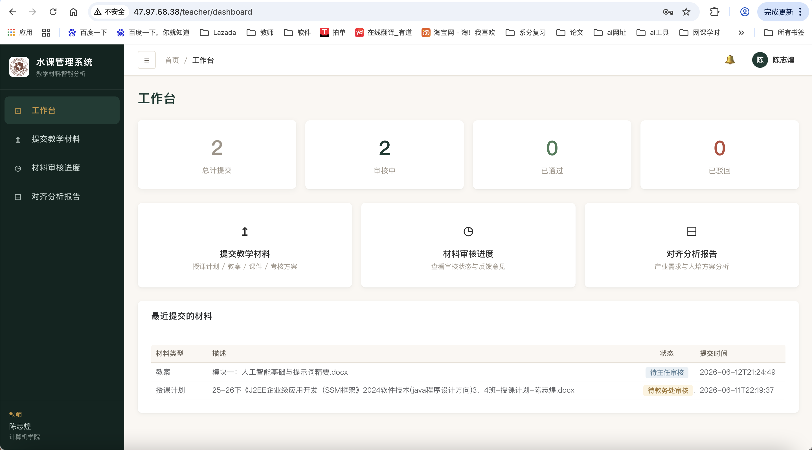
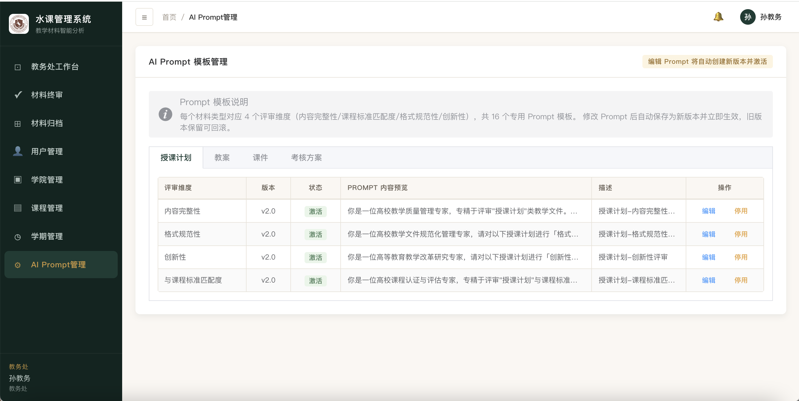
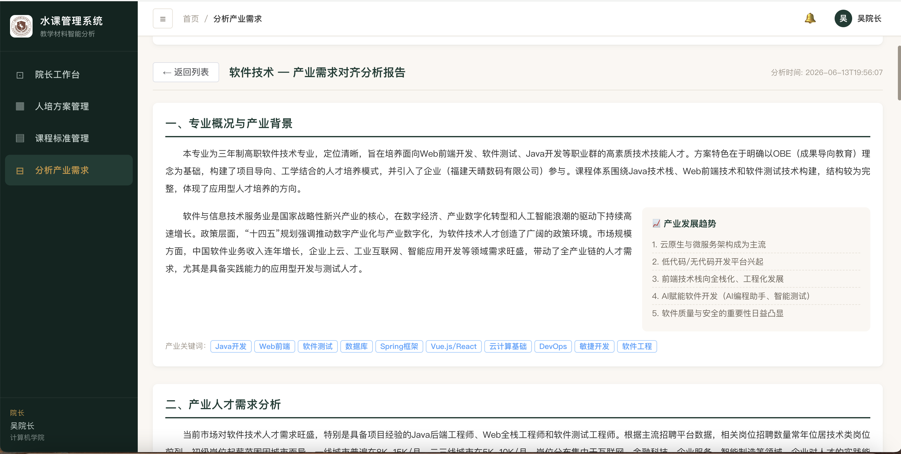
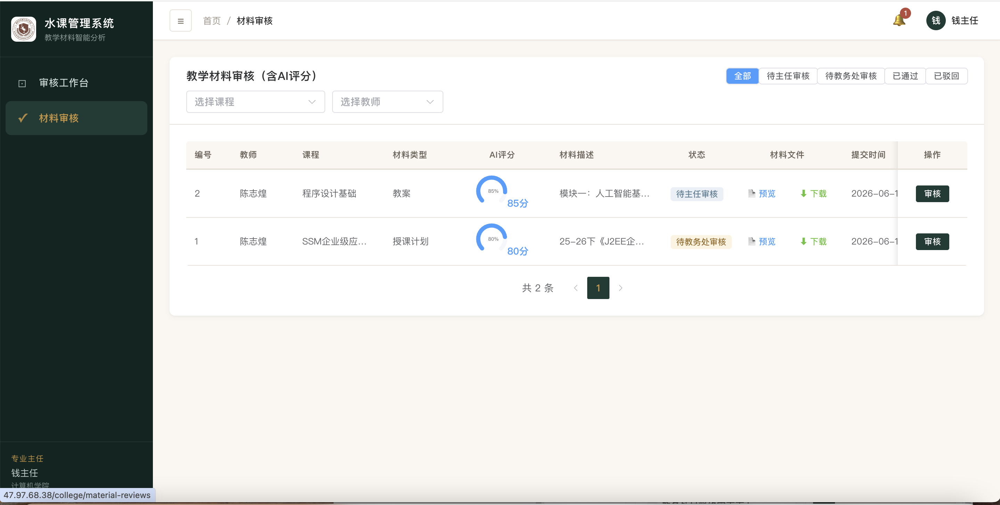
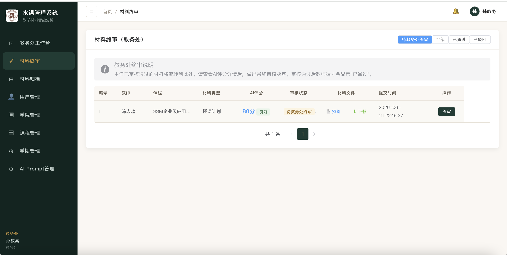

融合火山引擎大模型（豆包/DeepSeek），实现教学材料四维智能评审、多级审核流转、产业需求对齐分析的一站式教学管理平台。
项目背景
每学期需审核4类材料：授课计划、教案、课件、考核方案。一所中型高校每年产生数千份教学文档。
教师提交→学院主任审核→教务处终审，三级流转，涉及4种角色权限体系。
人工审核主观偏差大（>40%），缺乏量化评审维度，难以追溯评价依据和改进方向。
纸质审批3天以上，一个学院50位老师×4份材料=200份，光审阅就要100-150小时。
4-5倍效率差距教学材料、课程标准、产业需求三者脱节，无法反向检验课程体系是否符合市场需要。
需求匹配盲区纸质材料堆积如山，历史材料查找耗时、无法在线预览，无法批量统计分析。
检索耗时 > 10min痛点量化
人工审核一份教学材料的平均耗时
一个学院（50位教师）总审核时间
传统流程中教师需要切换使用的工具数
解决方案
接入火山引擎大模型，4个维度并发调用（内容完整性30%、课标匹配度30%、格式规范性20%、创新性20%），90秒内完成全部评审，自动生成评分与优化建议。
教师提交→AI评审→学院主任审核（通过/驳回含修改要求）→教务处终审→归档，审核耗时从3天降至1天以内。
基于人培方案全文，LLM生成8章节论文式报告（专业概况→产业背景→人才需求→课程体系→学习成果→就业前景→差距分析→改进建议），含6张ECharts交互图表。
🔗 核心业务流程
AI 评审体系
检查教学要素覆盖度，判断是否涵盖教学目标、重难点、课时安排等核心要素
自动对齐人培方案和课程标准，检测教学内容与目标的匹配程度
检查版面布局、字体规范、章节结构等标准化格式要求
评估教学设计创新、多媒体运用、互动设计等现代化教学手段

角色体系
提交4类教学材料
查看AI评审结果
查阅产业分析报告
材料统计卡片
审核本院材料
查看AI评分详情
在线预览材料文件
ECharts 5张图表
终审+材料归档
用户管理+批量导入
Prompt模板管理
ECharts 7张图表
人培方案管理
课程标准管理
发起产业需求分析
人培/课标总数


Prompt 模板体系
4种教学材料 × 4个评审维度 = 16个专业模板，教务处可在线实时编辑，系统自动记录修改历史、支持版本回溯，确保AI评审标准始终符合学校教学管理制度的最新要求。
聚焦学期规划、课时分配合理性
评价课堂教学设计质量
关注多媒体、交互创新维度
聚焦评价科学性、考核合理性

产业需求对齐分析

审核流程


技术架构
Spring Boot 2.7 + Java 8 · MyBatis-Plus 3.5 · JWT + Spring Security RBAC · CompletableFuture 四维并发 · RestTemplate LLM调用
Vue 3.4 + TypeScript · Element Plus 2.7 · Pinia 2.x + Axios · ECharts 5.x · Nginx 反向代理
Docker Compose 5服务 · MySQL 8.0 + Redis 7 + MinIO · 阿里云 ECS + ACR · 火山引擎方舟API
42个集成测试（100%通过）· 闭环E2E · GlobalExceptionHandler · ApiResponse<T> 统一封装 · 异步线程池
挑战与应对（上）
AI生成的报告可能带markdown标记（```json），或JSON因内容过长被截断。
✅ 解决：extractJson()预处理→正则移除markdown→定位{}边界→容错解析+详细错误日志。配合max_tokens=6000保障长输出完整。
异步线程池的独立线程无法继承HTTP请求的认证信息，initiatorId始终为null。
✅ 解决：Controller层提前取出userId→显式传参→异步线程直接使用。制定@Async规范文档，禁止异步方法调用SecurityUtils。
本地v2.0 schema与生产v1.0不匹配，INSERT报Unknown column 'report_json'。
✅ 解决：ALTER TABLE增量补列→建立自动化schema版本检查→部署前对比差异→生成增量迁移脚本。
QEMU模拟Java编译，每字节码指令→50+ARM指令。一次docker build耗时3h+。
✅ 解决：本地mvn编译JAR(30s)→scp到ECS→docker cp替换→restart，总耗时1-2分钟。
挑战与应对（下）
ECS MySQL 5.6默认latin1编码，存储中文数据乱码。
✅ 解决：添加skip-character-set-client-handshake配置+挂载mysql.cnf→确认utf8mb4编码+重建表。
ECS首次部署MinIO容器，shuike-manager存储桶未创建，文件上传失败。
✅ 解决：docker exec创建bucket→写入docker-compose健康检查脚本→首次启动自动检测。
用户管理界面el-select默认宽度导致学院名称被截断显示不全。
✅ 解决：添加style="width:180px"→全局排查所有el-select→制定UI最小宽度检查清单。
院长端发起分析后列表始终为空，但LLM返回成功（日志可见）。
✅ 解决：定位到DB缺列+异步丢上下文两个根因→数据库补列+代码修复→部署问题修复指导文档化。
更多亮点
材料提交、AI完成、审核结果、终审提醒全流程7类场景自动推送，铃铛角标30s自动刷新，红点未读提醒。
支持CSV/TXT格式一键导入用户，密码默认规则fzrjxy+工号，学院识别兼容名称或ID，导入结果详细反馈。
教务处按类型/课程/教师多维筛选，Word/PDF在线预览，批量下载。
删除材料时分步清理：MinIO文件→AI评审记录→数据库记录，彻底杜绝残留数据。
主任仅见本院材料、教师仅见个人材料、院长仅见本学院人培方案，RBAC权限配合college_id过滤。
PDFBox + POI 双引擎解析Word/PDF文件全文本，内容自动缓存，支持AI评审直接读取材料内容。
项目成果
Java文件
Vue页面
ECharts图表
技术文档
核心价值
高校教学材料审核是实实在在的工作量问题，AI替代人工初审具有明确的ROI——审核耗时从3天→1天，效率提升3倍。
四维并发评审+Prompt模板引擎+产业对齐分析，不是简单的"调API打分"，而是完整的AI驱动教学管理方法论。
PRD→设计→开发→测试→Docker→ECS部署全链路闭环，42个测试用例100%通过，生产环境稳定运行。
水课管理系统 · 高校教学材料智能化分析与审核平台